Pseudo-data generation with AMIGO_SData
Contents
- AMIGO_SData with pseudo-data options
- See also
- Example
- Prepare the model
- Homoscedastic error for each observable
- Heteroscedastic error for each measured point
- Additive error scaling with the signal
- Additive error scaling with the signal with detection limit
- Multiplicative error
- Multiplicative error with detection limit
AMIGO_SData with pseudo-data options
- Simulates observables under a given experimental scheme
- Generates pseudo-experimental data using a noise model
- Plots states evolution and experimental data vs time
Note that the pseudo-data generation option is also available directly in AMIGO_PE, in this case AMIGO_PE
- Simulates observables under a given experimental scheme using the nominal parameters
- Generates pseudo-experimental data using a noise model
- Estimates the unknown parameters of the model: the parameter guess values are used instead of the nominal parameters for the initial step of the estimation.
- Reports the results of the estimation by tables and plots.
See also
Example
Simple reaction A->B->C
A is transformed into B, and B into C following 1st order reactions.
clear; %============================ % RESULTS PATHS RELATED DATA %============================ inputs.pathd.results_folder='ABCreaction'; inputs.pathd.short_name='ABCreac'; inputs.pathd.run_overwrite='on'; %============================ % MODEL DEFINITION %============================ inputs.model.input_model_type='charmodelC'; inputs.model.n_st=3; inputs.model.n_par=2; inputs.model.n_stimulus=0; inputs.model.names_type='custom'; inputs.model.st_names=char('cA','cB','cC'); inputs.model.par_names=char('k1','k2'); inputs.model.eqns=... char('dcA = -k1*cA',... 'dcB = k1*cA - k2*cB',... 'dcC = k2*cB'); k1 = 0.25; k2 = 1.0; % Note that SData use the inputs.model.par for simulation and to generate data. inputs.model.par=[k1 k2]; %============================ % EXPERIMENTS RELATED INFO %============================ inputs.exps.n_exp = 1; inputs.exps.n_obs{1}=3; inputs.exps.obs_names{1}= char('obsA','obsB','obsC'); inputs.exps.obs{1} = char('obsA=cA','obsB=cB','obsC=cC'); inputs.exps.exp_y0{1} = [10 0 0]; inputs.exps.t_f{1}=10; inputs.exps.t_in{1} = 0; inputs.exps.n_s{1}=11; inputs.exps.t_s{1}=0:10; inputs.ivpsol.ivpsolver='cvodes'; inputs.ivpsol.rtol=1.0D-7; inputs.ivpsol.atol=1.0D-7;
More information regarding the inputs used in this example can be found here.
AMIGO_htmldoc_inputs(inputs,fullfile(pwd,'html','sdataex2.html'));
Prepare the model
AMIGO_Prep(inputs);
***********************************
* AMIGO, Copyright @CSIC *
* AMIGO2_R1 [July 2013] *
***********************************
*Date: 28-Sep-2015
------>Pre processing....this may take a few seconds.
------>Checking inputs....
------> WARNING message
AMIGO_check_model: You did not specify inputs.model.exe_type, standard will be assumed
------> Generating C code ...
------> Mexing files....
D:\AMIGO2_REPO_2014\AMIGO_R2012_cvodes\Kernel\IVP_solvers\cvodes\C_src4Amigo\src\src_amigo\simulate_amigo_model.c: In function 'simulate_amigo_model':
D:\AMIGO2_REPO_2014\AMIGO_R2012_cvodes\Kernel\IVP_solvers\cvodes\C_src4Amigo\src\src_amigo\simulate_amigo_model.c:330:6: warning: passing argument 1 of 'mexPrintf' from incompatible pointer type [enabled by default]
mexPrintf(stderr,"\nSolver failed at flag = CVode(cvode_mem, tout, y, &t, CV_TSTOP_RETURN);. . .\n");
^
In file included from D:\AMIGO2_REPO_2014\AMIGO_R2012_cvodes\Kernel\IVP_solvers\cvodes\C_src4Amigo\include\include_amigo/simulate_amigo_model.h:4:0,
from D:\AMIGO2_REPO_2014\AMIGO_R2012_cvodes\Kernel\IVP_solvers\cvodes\C_src4Amigo\src\src_amigo\simulate_amigo_model.c:1:
C:\MATLAB\R2011B~1\extern\include/mex.h:209:14: note: expected 'const char *' but argument is of type 'struct FILE *'
EXTERN_C int mexPrintf(
^
D:\AMIGO2_REPO_2014\AMIGO_R2012_cvodes\Kernel\IVP_solvers\cvodes\C_src4Amigo\src\src_interface\interface_with_matlab.c: In function 'mexFunction':
D:\AMIGO2_REPO_2014\AMIGO_R2012_cvodes\Kernel\IVP_solvers\cvodes\C_src4Amigo\src\src_interface\interface_with_matlab.c:200:17: warning: assignment from incompatible pointer type [enabled by default]
stats_struct = mxGetPr(plhs[5]);
^
------>Files generated....
Homoscedastic error for each observable
additive Gaussian measurement error model with constant standard deviation 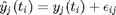, where:
- 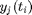 is the simulated value at time 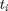 of observable 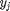
- 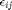 is a random variable: 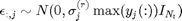
- 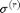 is the relative standard deviation given by the user through inputs.exps.std_dev for each observable separately.
Useful if we approximately know the relative error (in %*100) in the measurements. Note that the maximum value of each observable long the time dimension is used to scale the relative standard deviation.
inputs.exps.data_type = 'pseudo'; inputs.exps.noise_type = 'homo_var'; inputs.exps.std_dev{1} = [0.1 0.03 0.07]; results = AMIGO_SData(inputs);
***********************************
* AMIGO, Copyright @CSIC *
* AMIGO2_R1 [July 2013] *
***********************************
*Date: 28-Sep-2015
------>Checking inputs....
------> WARNING message
AMIGO_check_model: You did not specify inputs.model.exe_type, standard will be assumed
------> Calculating simulated experimental data for synthetic problems.
Experimental noise being used:
Homocedastic noise with varying variance.
Maximum standard deviation:
*Experiment 1:
Observable 1, 10.000000 (percent)
Observable 2, 3.000000 (percent)
Observable 3, 7.000000 (percent)
-------------------------------
Initial value problem related active settings
-------------------------------
ivpsolver: cvodes
RelTol: 1e-007
AbsTol: 1e-007
MaxStepSize: Inf
MaxNumberOfSteps: 100000
--------------------------------------------------------------------------
>>>> Generated experimental data for each experiment:
Experimental data 1:
inputs.exps.exp_data{1}=[
10.0957 0.129177 1.50902
7.64943 1.34782 1.13848
5.57932 1.62135 2.30413
7.03577 1.34852 3.73232
1.76246 1.17566 4.58832
2.67894 0.94594 8.07714
1.05129 0.872209 6.14395
2.0398 0.561985 7.05866
1.76173 0.416127 8.60254
-0.394724 0.422784 8.67846
3.04312 0.314444 8.05508
];
Error data 1:
Standard deviation: 10%
Standard deviation: 3%
Standard deviation: 7%
inputs.exps.error_data{1}=[
1 0.0471195 0.623398
1 0.0471195 0.623398
1 0.0471195 0.623398
1 0.0471195 0.623398
1 0.0471195 0.623398
1 0.0471195 0.623398
1 0.0471195 0.623398
1 0.0471195 0.623398
1 0.0471195 0.623398
1 0.0471195 0.623398
1 0.0471195 0.623398
];
--------------------------------------------------------------------------
------>Plotting results....
------>Results (report and struct_results.mat) and plots were kept in the directory:
Results\ABCreaction\SData_ABCreac_run1
Click <a href="matlab: cd('D:\AMIGO2_REPO_2014\AMIGO_R2012_cvodes\Results\ABCreaction\SData_ABCreac_run1')">here</a> to go to the results folder or <a href="matlab: load('D:\AMIGO2_REPO_2014\AMIGO_R2012_cvodes\Results\ABCreaction\SData_ABCreac_run1\strreport_ABCreac_run1.mat')">here</a> to load the results.
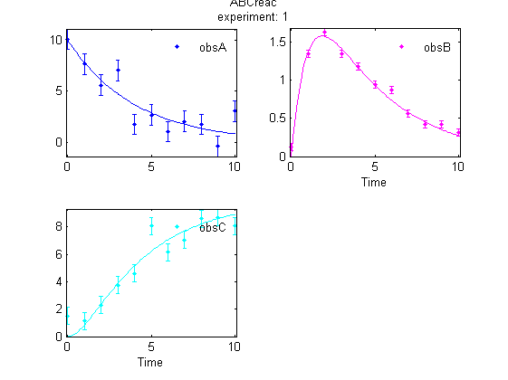 Note that
- Large error may obtained for small signals, since the relative standard deviation is scaled by the maximum value of the observable,
- To avoid negative values 'pseudo_pos' may used, which reflects the negative signals to the y = 0 line.
- The error bars are uniform in each observable.
- The error bars are different between the different observables, thus the effect of different measurement units can be handled.
- The error bar may not reach the simulated value, since it represents 1 standard deviation, which contains the true value by 0.68 probability
Heteroscedastic error for each measured point
additive Gaussian measurement error model with unique standard deviation for each point: , where:
- is the simulated value at time of observable
- is a random variable: 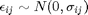
- 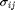 is the absolute standard deviation given by the user through inputs.exps.error_data for each measurement point.
Useful if we know the measurement accuracy in each time point.
inputs.exps.data_type = 'pseudo'; inputs.exps.noise_type = 'hetero'; inputs.exps.error_data{1} = ... [1.0 0.01 0.01 0.9000 0.0500 0.0500 0.8056 0.2000 0.1000 0.7111 0.3500 0.1500 0.6167 0.5000 0.2000 0.5222 0.5000 0.2500 0.4278 0.5000 0.3000 0.3333 0.3875 0.3500 0.2389 0.2750 0.4000 0.1444 0.1625 0.4500 0.0500 0.0500 0.5000]; results = AMIGO_SData(inputs);
***********************************
* AMIGO, Copyright @CSIC *
* AMIGO2_R1 [July 2013] *
***********************************
*Date: 28-Sep-2015
------>Checking inputs....
------> WARNING message
AMIGO_check_model: You did not specify inputs.model.exe_type, standard will be assumed
------> Calculating simulated experimental data for synthetic problems.
Experimental noise being used:
Heterocedastic noise.
Standard deviation is given for each point:
*Experiment 1:
Time Observables (abs STD)
t(1) 1 0.01 0.01
t(2) 0.9 0.05 0.05
t(3) 0.81 0.2 0.1
t(4) 0.71 0.35 0.15
t(5) 0.62 0.5 0.2
t(6) 0.52 0.5 0.25
t(7) 0.43 0.5 0.3
t(8) 0.33 0.39 0.35
t(9) 0.24 0.28 0.4
t(10) 0.14 0.16 0.45
t(11) 0.05 0.05 0.5
-------------------------------
Initial value problem related active settings
-------------------------------
ivpsolver: cvodes
RelTol: 1e-007
AbsTol: 1e-007
MaxStepSize: Inf
MaxNumberOfSteps: 100000
--------------------------------------------------------------------------
>>>> Generated experimental data for each experiment:
Experimental data 1:
inputs.exps.exp_data{1}=[
9.27069 0.00328755 -0.013827
6.59548 1.27277 0.881218
4.58826 1.54816 2.48856
3.81128 1.92918 4.00943
4.30284 1.79674 5.37966
3.45808 0.481739 5.89982
2.2409 -0.0819567 6.4999
1.11894 0.836368 7.6481
1.59375 0.398389 7.84088
1.01908 0.544648 9.08558
0.817644 0.263789 8.50703
];
Error data 1:
Standard deviation: 10%
Standard deviation: 3%
Standard deviation: 7%
inputs.exps.error_data{1}=[
1 0.01 0.01
0.9 0.05 0.05
0.8056 0.2 0.1
0.7111 0.35 0.15
0.6167 0.5 0.2
0.5222 0.5 0.25
0.4278 0.5 0.3
0.3333 0.3875 0.35
0.2389 0.275 0.4
0.1444 0.1625 0.45
0.05 0.05 0.5
];
--------------------------------------------------------------------------
------>Plotting results....
------>Results (report and struct_results.mat) and plots were kept in the directory:
Results\ABCreaction\SData_ABCreac_run1
Click <a href="matlab: cd('D:\AMIGO2_REPO_2014\AMIGO_R2012_cvodes\Results\ABCreaction\SData_ABCreac_run1')">here</a> to go to the results folder or <a href="matlab: load('D:\AMIGO2_REPO_2014\AMIGO_R2012_cvodes\Results\ABCreaction\SData_ABCreac_run1\strreport_ABCreac_run1.mat')">here</a> to load the results.
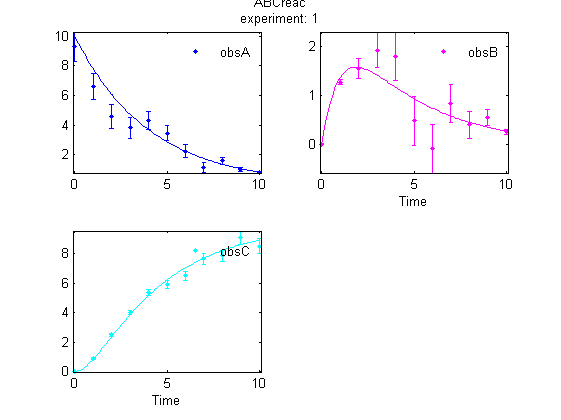 Note that
- The error bars represents the user defined values.
- Different accuracies can be defined for each time point in each observable
- The error bar may not reach the simulated value, since it represents 1 standard deviation, that contains the true value by 0.68 probability
Additive error scaling with the signal
additive Gaussian measurement error model, the standard deviation of which scales with the signal (constant signal to noise ratio). 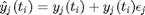, where:
- is the simulated value at time of observable
- 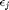 is a random variable: 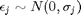
- 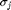 vector is given by the user through inputs.exps.std_dev for each observable.
Useful if we know that (1) the measurement error is proportional to the signal and (2) the proportionality factor.
inputs.exps.data_type = 'pseudo'; inputs.exps.noise_type = 'hetero_proportional'; inputs.exps.std_dev{1} = [0.1 0.03 0.07]; results = AMIGO_SData(inputs);
***********************************
* AMIGO, Copyright @CSIC *
* AMIGO2_R1 [July 2013] *
***********************************
*Date: 28-Sep-2015
------>Checking inputs....
------> WARNING message
AMIGO_check_model: You did not specify inputs.model.exe_type, standard will be assumed
------> Calculating simulated experimental data for synthetic problems.
Experimental noise being used:
Heterocedastic noise.
Standard deviation proportional to the observable: a*y being a maximum:
*Experiment 1:
Observable 1, 10.000000 (percent)
Observable 2, 3.000000 (percent)
Observable 3, 7.000000 (percent)
-------------------------------
Initial value problem related active settings
-------------------------------
ivpsolver: cvodes
RelTol: 1e-007
AbsTol: 1e-007
MaxStepSize: Inf
MaxNumberOfSteps: 100000
--------------------------------------------------------------------------
>>>> Generated experimental data for each experiment:
Experimental data 1:
inputs.exps.exp_data{1}=[
10.429 0 0
7.97189 1.31478 0.842715
5.26008 1.58847 2.35914
4.02651 1.40441 3.8271
3.5666 1.11674 5.71275
2.74153 0.922907 5.94093
1.9626 0.756917 6.65691
1.55478 0.571635 7.60251
1.21334 0.471333 8.40497
1.00053 0.338936 8.5978
0.816993 0.275002 10.1591
];
Error data 1:
Standard deviation: 10%
Standard deviation: 3%
Standard deviation: 7%
inputs.exps.error_data{1}=[
1 0 0
0.778801 0.0410921 0.0589578
0.606531 0.0471195 0.165483
0.472367 0.0422579 0.270742
0.367879 0.0349564 0.36092
0.286505 0.0279767 0.434168
0.22313 0.0220651 0.492324
0.173774 0.0172862 0.538024
0.135335 0.0135 0.573765
0.105399 0.0105276 0.601656
0.082085 0.00820396 0.623398
];
--------------------------------------------------------------------------
------>Plotting results....
------>Results (report and struct_results.mat) and plots were kept in the directory:
Results\ABCreaction\SData_ABCreac_run1
Click <a href="matlab: cd('D:\AMIGO2_REPO_2014\AMIGO_R2012_cvodes\Results\ABCreaction\SData_ABCreac_run1')">here</a> to go to the results folder or <a href="matlab: load('D:\AMIGO2_REPO_2014\AMIGO_R2012_cvodes\Results\ABCreaction\SData_ABCreac_run1\strreport_ABCreac_run1.mat')">here</a> to load the results.
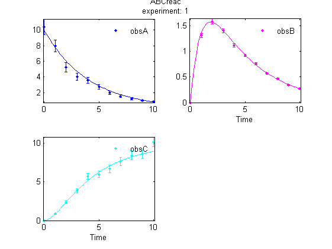 Note that
- The error bars scales with the signal value.
- The error bars are different between the different observables, thus the effect of different measurement units and different accuracy for different observables can be handled.
- The error bar may not reach the simulated value, since it represents 1 standard deviation, that contains the true value by 0.68 probability
Additive error scaling with the signal with detection limit
additive Gaussian measurement error model, the standard deviation of which scales with the signal (constant signal to noise ratio). The model is extended to low signals, where the error levels off.
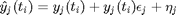 ,
where:
- is the simulated value at time of observable
- is a random variable: 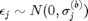
- 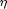 is the background noise variable 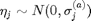
- 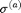 and 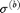 vectors are given by the user through inputs.exps.stddeva and inputs.exps.stddevb for each observable.
The variance of the pseudo data is: 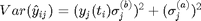
Useful if we know that (1) the measurement error is proportional to the signal for large signals and constant for small signals. Equivalently, the signal to noise ratio is constant for large signals, but decreases as the signal reach a low limit.
inputs.exps.data_type = 'pseudo'; inputs.exps.noise_type = 'hetero_lin'; inputs.exps.stddeva{1} = [0.2 0.2 0.5]; inputs.exps.stddevb{1} = [0.05 0.03 0.07]; % extend the time horizon to see small values for obsA inputs.exps.t_f{1}=20; inputs.exps.t_in{1} = 0; inputs.exps.n_s{1}=21; inputs.exps.t_s{1}=0:20; results = AMIGO_SData(inputs);
***********************************
* AMIGO, Copyright @CSIC *
* AMIGO2_R1 [July 2013] *
***********************************
*Date: 28-Sep-2015
------>Checking inputs....
------> WARNING message
AMIGO_check_model: You did not specify inputs.model.exe_type, standard will be assumed
------> Calculating simulated experimental data for synthetic problems.
Experimental noise being used:
Heterocedastic noise a+b*y.
*Experiment 1:
Observable 1, 0.200000 ,0.050000
Observable 2, 0.200000 ,0.030000
Observable 3, 0.500000 ,0.070000
-------------------------------
Initial value problem related active settings
-------------------------------
ivpsolver: cvodes
RelTol: 1e-007
AbsTol: 1e-007
MaxStepSize: Inf
MaxNumberOfSteps: 100000
--------------------------------------------------------------------------
>>>> Generated experimental data for each experiment:
Experimental data 1:
inputs.exps.exp_data{1}=[
9.77078 0.410758 -0.0337505
7.75499 0.812472 0.53099
5.62885 1.69989 1.98489
4.60447 1.46739 4.22335
3.619 1.33784 5.27913
2.7478 1.12071 7.51433
2.0938 0.797187 6.63268
1.8453 0.670403 7.97316
1.36845 0.135586 7.64688
0.989807 0.410331 8.96344
1.06546 0.125705 8.24526
0.930319 0.195849 9.33027
0.393492 0.136741 10.7618
0.434751 0.129449 8.74767
0.411804 -0.0693396 8.92239
0.370881 0.636136 9.17643
-0.00112999 0.368117 10.4859
0.283114 -0.117985 10.6084
0.278952 0.0393649 9.19998
-0.0592775 0.244593 10.4316
0.298095 -0.110585 10.6669
];
Error data 1:
Standard deviation: 10%
Standard deviation: 3%
Standard deviation: 7%
inputs.exps.error_data{1}=[
0.538516 0.2 0.5
0.437759 0.204178 0.503464
0.363277 0.205476 0.526673
0.309488 0.204416 0.568596
0.271724 0.203032 0.616655
0.246011 0.201947 0.662195
0.229013 0.201213 0.7017
0.218058 0.200746 0.734486
0.211137 0.200455 0.761056
0.206827 0.200277 0.782298
0.204168 0.200168 0.79914
0.202538 0.200102 0.812424
0.201543 0.200062 0.822865
0.200937 0.200038 0.831051
0.200569 0.200023 0.837458
0.200345 0.200014 0.842468
0.20021 0.200008 0.84638
0.200127 0.200005 0.849434
0.200077 0.200003 0.851817
0.200047 0.200002 0.853675
0.200028 0.200001 0.855123
];
--------------------------------------------------------------------------
------>Plotting results....
------>Results (report and struct_results.mat) and plots were kept in the directory:
Results\ABCreaction\SData_ABCreac_run1
Click <a href="matlab: cd('D:\AMIGO2_REPO_2014\AMIGO_R2012_cvodes\Results\ABCreaction\SData_ABCreac_run1')">here</a> to go to the results folder or <a href="matlab: load('D:\AMIGO2_REPO_2014\AMIGO_R2012_cvodes\Results\ABCreaction\SData_ABCreac_run1\strreport_ABCreac_run1.mat')">here</a> to load the results.
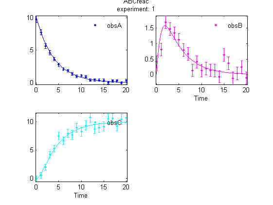 Note that
- The error bars scales with the signal value, but become constant for small signal
- The error bars are different between the different observables, thus the effect of different measurement units and different accuracy for different observables can be handled.
- The error bar may not reach the simulated value, since it represents 1 standard deviation, that contains the true value by 0.68 probability
Multiplicative error
multiplicative log-normal measurement error model, the standard deviation of which scales with the signal (constant signal to noise ratio).
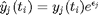 ,
where:
- is the simulated value at time of observable
- is a random variable:
- vectors are given by the user through inputs.exps.stddeva and inputs.exps.stddevb for each observable.
The variance of the pseudo data is: 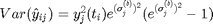
Useful if we know that (1) the multiplicative measurement error is dominated in the measurement, which is proportional to the signal for large signals.
inputs.exps.data_type = 'pseudo'; inputs.exps.noise_type = 'log_normal'; inputs.exps.stddevb{1} = [0.05 0.03 0.07]; % extend the time horizon to see small values for obsA inputs.exps.t_f{1}=20; inputs.exps.t_in{1} = 0; inputs.exps.n_s{1}=21; inputs.exps.t_s{1}=0:20; % change the initial condition to see large changes inputs.exps.exp_y0{1} = [1e3 0 0]; inputs.model.par=[k1*0.8 k2]; results = AMIGO_SData(inputs);
***********************************
* AMIGO, Copyright @CSIC *
* AMIGO2_R1 [July 2013] *
***********************************
*Date: 28-Sep-2015
------>Checking inputs....
------> WARNING message
AMIGO_check_model: You did not specify inputs.model.exe_type, standard will be assumed
------> Calculating simulated experimental data for synthetic problems.
Experimental noise being used:
-------------------------------
Initial value problem related active settings
-------------------------------
ivpsolver: cvodes
RelTol: 1e-007
AbsTol: 1e-007
MaxStepSize: Inf
MaxNumberOfSteps: 100000
--------------------------------------------------------------------------
>>>> Generated experimental data for each experiment:
Experimental data 1:
inputs.exps.exp_data{1}=[
994.479 0 0
738.57 107.666 65.3726
598.843 131.006 190.523
585.493 125.181 254.757
429.111 102.935 493.92
412.347 89.9313 424.003
299.208 74.4391 587.844
250.583 57.3626 704.026
202.423 50.5046 721.657
158.883 43.0003 871.637
131.535 34.2213 882.703
111.853 27.3967 899.862
99.161 22.9717 880.68
72.1527 19.008 943.791
58.5498 15.3592 904.78
46.8271 11.976 877.998
36.8995 10.2369 988.072
32.2985 7.72246 819.819
26.4465 6.84547 964.234
21.841 5.68182 960.783
18.8966 4.5068 937.491
];
Error data 1:
Standard deviation: 10%
Standard deviation: 3%
Standard deviation: 7%
inputs.exps.error_data{1}=[
50.0938 0 0
41.0134 3.38367 4.81662
33.5789 4.01509 13.7659
27.4921 3.74521 22.9344
22.5086 3.23478 31.1184
18.4285 2.71039 38.0681
15.088 2.24188 43.8498
12.353 1.84388 48.6171
10.1138 1.51273 52.5327
8.28046 1.23965 55.743
6.77946 1.01536 58.3731
5.55056 0.831459 60.5271
4.54441 0.680798 62.2908
3.72065 0.557411 63.7349
3.04621 0.456377 64.9173
2.49403 0.373653 65.8854
2.04194 0.305922 66.6779
1.6718 0.250468 67.3268
1.36875 0.205066 67.8581
1.12064 0.167894 68.2931
0.917502 0.13746 68.6492
];
--------------------------------------------------------------------------
------>Plotting results....
------>Results (report and struct_results.mat) and plots were kept in the directory:
Results\ABCreaction\SData_ABCreac_run1
Click <a href="matlab: cd('D:\AMIGO2_REPO_2014\AMIGO_R2012_cvodes\Results\ABCreaction\SData_ABCreac_run1')">here</a> to go to the results folder or <a href="matlab: load('D:\AMIGO2_REPO_2014\AMIGO_R2012_cvodes\Results\ABCreaction\SData_ABCreac_run1\strreport_ABCreac_run1.mat')">here</a> to load the results.
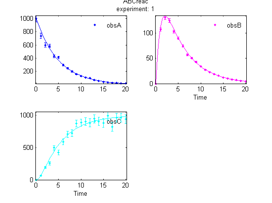 Note that
- The results are similar to that of the results of hetero_lin option
- The error bars scales with the signal value
- The error bars are different between the different observables, thus the effect of different measurement units and different accuracy for different observables can be handled.
- The error bar may not reach the simulated value, since it represents 1 standard deviation, that contains the true value by 0.68 probability
Multiplicative error with detection limit
multiplicative log-normal measurement error model, the standard deviation of which scales with the signal (constant signal to noise ratio). The model is extended to low signals, where the error levels off.
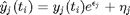 ,
where:
- is the simulated value at time of observable
- is a random variable:
- is the background noise variable
- and vectors are given by the user through inputs.exps.stddeva and inputs.exps.stddevb for each observable.
The variance of the pseudo data is: 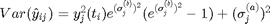
Useful if we know that (1) the multiplicative measurement error is dominated in the measurement, which is proportional to the signal for large signals and constant for small signals. Equivalently, the signal to noise ratio is constant for large signals, but decreases as the signal reach a low limit.
inputs.exps.data_type = 'pseudo'; inputs.exps.noise_type = 'log_normal_background'; inputs.exps.stddeva{1} = [10 5 5]; inputs.exps.stddevb{1} = [0.05 0.03 0.07]; % extend the time horizon to see small values for obsA inputs.exps.t_f{1}=20; inputs.exps.t_in{1} = 0; inputs.exps.n_s{1}=21; inputs.exps.t_s{1}=0:20; % change the initial condition to see large changes inputs.exps.exp_y0{1} = [1e3 0 0]; inputs.model.par=[k1*0.8 k2]; results = AMIGO_SData(inputs);
***********************************
* AMIGO, Copyright @CSIC *
* AMIGO2_R1 [July 2013] *
***********************************
*Date: 28-Sep-2015
------>Checking inputs....
------> WARNING message
AMIGO_check_model: You did not specify inputs.model.exe_type, standard will be assumed
------> Calculating simulated experimental data for synthetic problems.
Experimental noise being used:
-------------------------------
Initial value problem related active settings
-------------------------------
ivpsolver: cvodes
RelTol: 1e-007
AbsTol: 1e-007
MaxStepSize: Inf
MaxNumberOfSteps: 100000
--------------------------------------------------------------------------
>>>> Generated experimental data for each experiment:
Experimental data 1:
inputs.exps.exp_data{1}=[
1024.61 -0.20937 -4.94484
869.221 97.1181 64.0266
668.544 133.53 194.067
561.606 124.849 286.598
437.046 117.243 463.656
364.209 93.6061 469.275
288.524 76.2326 728.798
233.076 63.2431 652.993
224.2 67.2635 868.544
166.84 46.5274 686.264
144.044 34.0357 766.695
100.009 22.9065 778.484
76.4501 20.4216 883.214
72.6893 14.1103 959.945
54.1757 16.5689 878.665
53.3618 12.0368 1011.69
24.3983 3.01283 1045.27
28.6639 9.7367 971.23
26.2288 10.8662 1033.94
25.863 13.7628 912.31
18.1135 5.645 978.098
];
Error data 1:
Standard deviation: 10%
Standard deviation: 3%
Standard deviation: 7%
inputs.exps.error_data{1}=[
51.0822 5 5
42.2149 6.03732 6.94261
35.0363 6.41256 14.6458
29.2543 6.24713 23.4731
24.63 5.95515 31.5175
20.9669 5.68737 38.3951
18.101 5.4796 44.1339
15.8933 5.32916 48.8735
14.2228 5.22382 52.7701
12.9833 5.15138 55.9668
12.0814 5.10205 58.5869
11.4372 5.06866 60.7332
10.9842 5.04614 62.4912
10.6697 5.03097 63.9308
10.4537 5.02078 65.1096
10.3063 5.01394 66.0748
10.2063 5.00935 66.8651
10.1388 5.00627 67.5122
10.0932 5.0042 68.0421
10.0626 5.00282 68.4759
10.042 5.00189 68.8311
];
--------------------------------------------------------------------------
------>Plotting results....
------>Results (report and struct_results.mat) and plots were kept in the directory:
Results\ABCreaction\SData_ABCreac_run1
Click <a href="matlab: cd('D:\AMIGO2_REPO_2014\AMIGO_R2012_cvodes\Results\ABCreaction\SData_ABCreac_run1')">here</a> to go to the results folder or <a href="matlab: load('D:\AMIGO2_REPO_2014\AMIGO_R2012_cvodes\Results\ABCreaction\SData_ABCreac_run1\strreport_ABCreac_run1.mat')">here</a> to load the results.
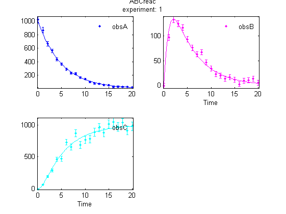 Note that
- The results are similar to that of the results of hetero_lin option
- The error bars scale with the signal value, but become constant for small signal
- The magnitude of both the background and the proportional part of the error can be set for each observable separately, thus the effect of different measurement units and accuracy of observables can be handled.
- The error bar may not reach the simulated (true) value, since it represents 1 standard deviation, that contains the true value by approx. 0.68 probability